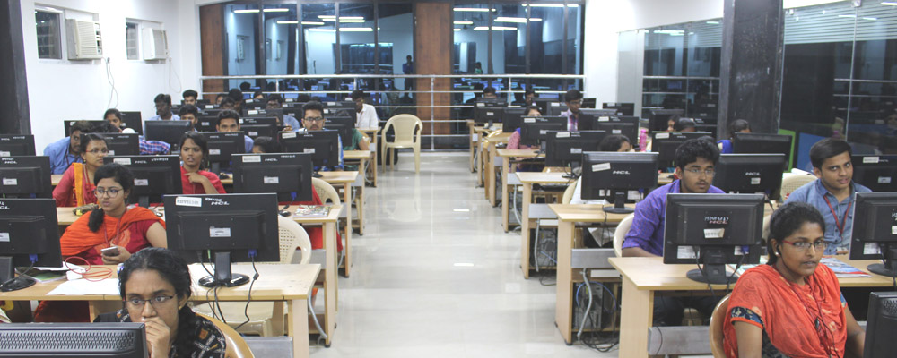

UG-B.E.Computer Science and Engineering
PG-M.E.Computer Science and Engineering
Ph.D.-Computer Science and Engineering

Since its inception in 1997, the Department of Computer Science and Engineering has been continuously making progress in teaching and R & D activities. Initially commencing with an intake of 60 students, the sanctioned intake was increased to 90 seats in 2001 and to 120 seats in 2005 and to 300 seats in 2015. The Post Graduate programme viz. M.E. - Computer Science and Engineering was introduced in the year 2004-05 and in 2006 the Department was recognized as Collaborative Research Centre by Anna University to offer M.S. (by research) and Ph.D. programmes. The Department has been maintaining an active interaction with the industries particularly with the Computer Society of India. The IT major Tata Consultancy Services has accredited the college for faculty and students development programmes, campus interview etc.
The Department has entered into an MoU with IBM, Infosys, TCS, Zoho, Virtusa, Pega, Oracle, Wipro, VMWare, UiPath, Dell, Cognizant, AWS, U.S. Technologies and many other renowned software companies for software training and Faculty Development Programmes, besides R&D activities.
The students from the Department have brought laurels by winning AICTE Smart India Hackathon three times. CII Connect awards have been presented by honourable Chief Minister of Tamilnadu to the students. The students have participated in several Hackathons and competitions and won accolades for the Department and college. Many of the students are well placed in leading software companies such as TCS, Infosys, Zoho, IBM, etc., There are quite a number of students who have taken up the ladder of Entrepreneurship.
Vision
To promote highly ethical and innovative computer professionals through excellence in teaching, training and research.
Mission